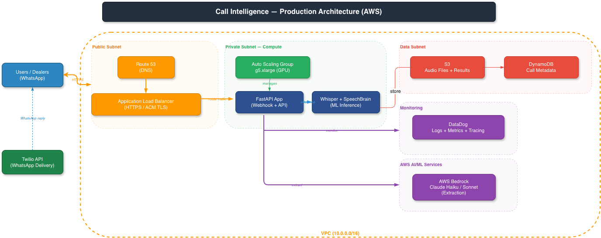

Call Intelligence Pipeline: From Sales Call to Structured Summary in 60 Seconds
Marketplace Application
Sales teams on any marketplace take dozens of calls a day. Follow-ups get missed. Action items get forgotten. There's no record of what was discussed or promised. This pipeline takes the raw call recording and delivers a structured summary — who said what, what needs to happen next — directly to the team's WhatsApp within a minute of hanging up. Works across English, French, German, and Spanish, making it practical for any marketplace operating across multiple markets.
Project Summary
Domain: Online Marketplace / Sales Call Intelligence Role: ML Engineer (full system design & implementation) Scope: 4 languages, 5-stage pipeline, real-time delivery
The Problem
Small and mid-size businesses receive dozens of phone calls daily but have no systematic way to extract insights from them. Important action items get lost, follow-ups are missed, and there's no searchable record of what was discussed. Existing transcription tools provide raw text but don't identify speakers or extract structured insights.
The goal: Build a complete pipeline that takes a raw phone call recording and delivers a structured summary with speaker attribution and action items - directly to the business owner's phone via WhatsApp.
My Approach
Five-Stage Pipeline Architecture
Each stage is independently optimised for its specific task:
phone call recording
Whisper Tiny
~1s
Whisper Large v3 Turbo
~15s / 20min call
SpeechBrain ECAPA-TDNN
~3s
Claude Haiku / Sonnet
~2s
Twilio · 3 messages
instant
Stage 1: Language Detection (~1s)
Model: Whisper Tiny (39M parameters)
The challenge with real-world calls: the first 30 seconds might be hold music, an IVR system, or silence. My solution samples audio at multiple offsets (0s, 30s, 60s) to find actual speech before detecting language. Falls back to English if all offsets fail.
Stage 2: Transcription (~15s for 2min call)
Model: Whisper Large v3 Turbo
Key engineering decisions:
- Chunked inference: 30-second windows with 5-second stride for memory-efficient processing of calls of any length
- Hallucination suppression:
no_repeat_ngram_size=6, logprob thresholds, compression ratio filtering - critical for handling real-world audio artifacts - Word-level timestamps: Every sentence gets precise timing for downstream speaker attribution
Stage 3: Speaker Diarization (~3s)
Model: SpeechBrain ECAPA-TDNN (192-dimensional speaker embeddings)
- Generates speaker embeddings per transcript segment
- Clusters via K-Means (fixed speakers) or Agglomerative clustering (threshold-based)
- Merges consecutive same-speaker segments into natural conversational turns
- Infers speaker roles with per-speaker talk time metrics
I chose SpeechBrain over pyannote for its lighter footprint and no dependency on HuggingFace authentication tokens - better for production deployment.
Stage 4: LLM Extraction (~2s)
Language-aware model routing for cost optimization:
| Language | Model | Rationale |
|---|---|---|
| English | Claude Haiku | 10x cheaper, sufficient for structured extraction |
| French, German, Spanish | Claude Sonnet | Better multilingual reasoning |
The system prompt enforces evidence-grounding: every claim in the summary must be traceable to a specific part of the transcript. Output is Pydantic-validated:
{
"summary": "Structured call summary...",
"action_items": [{ "title": "Follow up on proposal", "description": "..." }]
}
Stage 5: WhatsApp Delivery (~instant)
- FastAPI
BackgroundTasksensures Twilio receives a fast 200 response (webhook compliance) - Pipeline runs asynchronously after webhook returns
- Results chunked to respect WhatsApp's 1,600-character message limit
- Three messages delivered: summary, action items, full speaker-attributed transcript
System Architecture
Pipeline Architecture
Phone Call Recording
WAV / OGG / MP3
WhatsApp Bot or File Upload
Whisper Tiny (39M params)
Multi-offset 30s sampling
0s / 30s / 60s offsets
Whisper Large v3 Turbo
30s chunks, 5s stride
Word-level timestamps
SpeechBrain ECAPA-TDNN
192-dim embeddings
K-Means / Agglomerative
Claude Haiku 4.5 (EN)
Claude Sonnet 4.6 (other)
Pydantic JSON schema
Twilio API
Summary + Action Items
Speaker Transcription
AWS Production Architecture

The system supports three execution modes:
- CLI mode: Direct processing for development and testing
- API mode: FastAPI server for integration with other services
- WhatsApp bot: Twilio webhook for end-user interaction
Configuration: Hydra + OmegaConf for hierarchical YAML configs with per-environment overrides (dev/staging/prod).
Production deployment: AWS architecture with auto-scaling GPU instances, DynamoDB for metadata, S3 for audio storage, and Datadog for monitoring.
Tech Stack
Python FastAPI Whisper SpeechBrain ECAPA-TDNN Claude Haiku Claude Sonnet AWS Bedrock Twilio Hydra Pydantic DynamoDB S3 Datadog Docker
Key Takeaways
- Multi-offset language detection handles real-world call artifacts (silence, IVR, hold music) that break naive detection
- Chunked Whisper inference with overlapping windows enables memory-efficient processing of arbitrarily long calls
- Language-based model routing (Haiku for English, Sonnet for multilingual) delivers 10x cost savings without quality loss
- Embedding-based diarization via SpeechBrain provides lighter-weight speaker identification than pyannote with fewer deployment dependencies
- Background webhook processing is essential for real-time messaging integrations - never block the webhook response